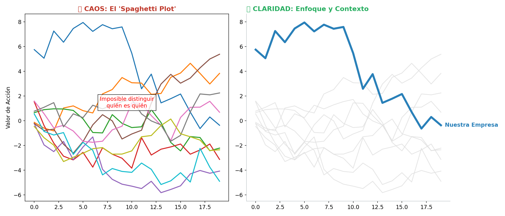
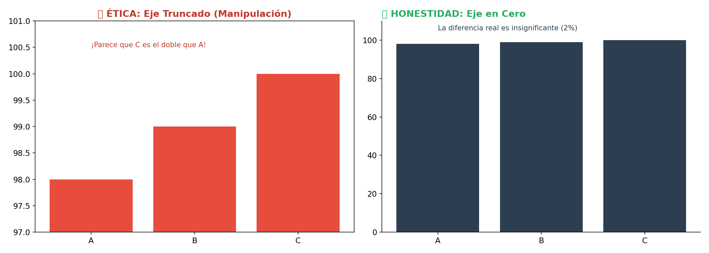
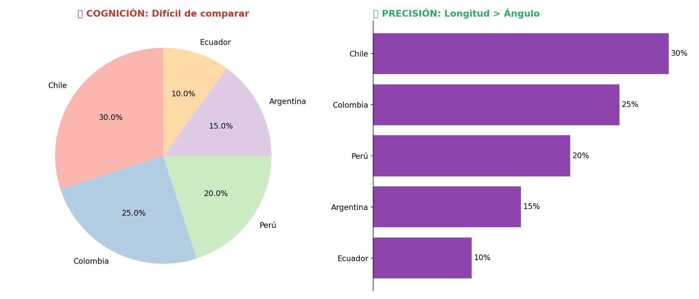
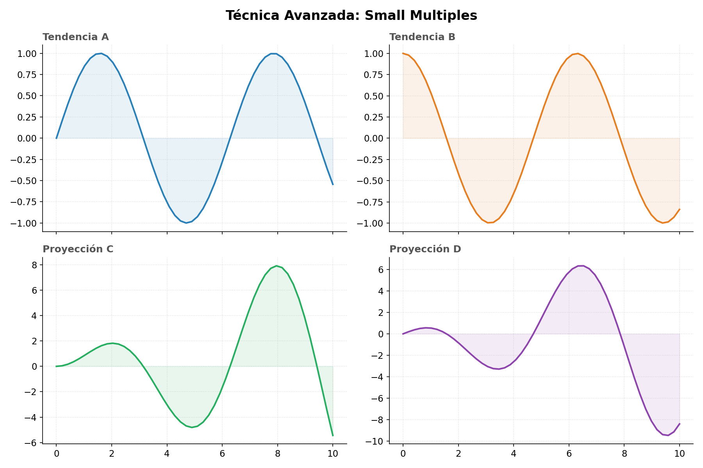

Teoría Perceptiva: Los humanos somos excelentes comparando longitudes (barras) alineadas en una base común. Somos terribles comparando ángulos y áreas (tortas). Si tienes más de 3 categorías, usa siempre barras.
Módulo de Introducción
Ciencia de la Visualización
Bienvenido a la referencia técnica. Aquí abandonamos las configuraciones por defecto. Estudiaremos la ergonomía visual, la carga cognitiva y cómo evitar los errores que destruyen la credibilidad de un científico de datos.
Caso #1: Reduciendo el Ruido Visual
Alta Carga Cognitiva

El Error
Intentar mostrar todo con la misma intensidad. Cuando todo destaca, nada destaca. El cerebro no puede seguir 10 líneas de colores similares cruzándose entre sí.
La Técnica "Highlighting"
Usamos el contexto (líneas grises) para mostrar la variabilidad del mercado, pero usamos un color de acción (Azul Fuerte) para contar la historia específica de nuestra empresa.
PYTHON
# 1. Dibujar el contexto (Ruido controlado)
plt.plot(df, color='lightgray', alpha=0.5)
# 2. Dibujar la señal (Datos importantes)
plt.plot(df['MiEmpresa'], color='#2563eb', linewidth=3)
# 3. Etiquetado directo (Evitar leyendas)
plt.text(x_final, y_final, "Mi Empresa", color='#2563eb')Caso #2: Ética y el Eje Y
Manipulación

Eje Truncado
Al empezar el eje Y en 97, una diferencia del 1% visualmente parece una diferencia del 200%. Esto es común en noticias sensacionalistas, pero inaceptable en ciencia.
Principio de Proporcionalidad
En gráficos de barras, la longitud codifica el valor. Si cortas la barra, destruyes la codificación visual. Las barras siempre deben empezar en 0.
Caso #3: La Ineficiencia del Gráfico de Torta
Baja Precisión

Caso #4: Técnica Profesional "Small Multiples"
Recomendado

En lugar de superponer todo en un solo eje confuso, divide y vencerás. Crear una cuadrícula de gráficos que comparten ejes permite comparar tendencias sin ruido visual.
PYTHON
# El secreto es compartir ejes (sharex, sharey)
fig, axs = plt.subplots(2, 2, sharex=True, sharey=True)
for ax, datos in zip(axs.flat, lista_datos):
ax.plot(datos)
# Limpiar ruido en cada subgráfico
ax.spines['top'].set_visible(False)